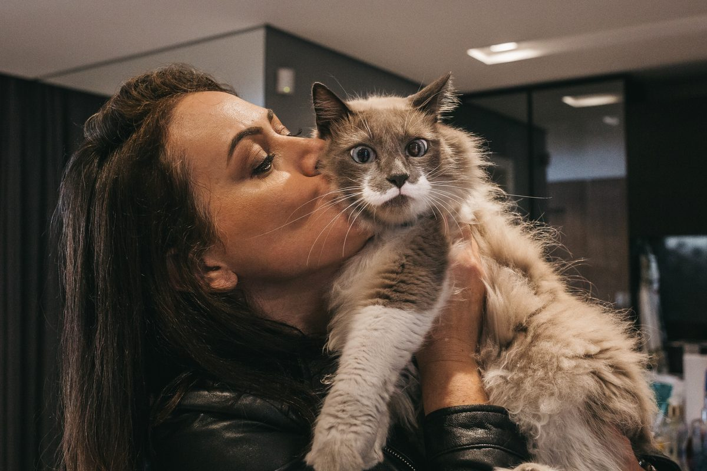
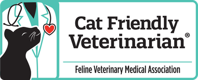

Medicina felina e vacinas no conforto da sua casa, sem estresse para o seu gato. Atendimento em Joinville e região.
Agendar um Atendimento
Focada 100% na saúde e bem-estar dos gatos, oferecendo desde a prevenção até tratamentos complexos.
Consultas de rotina (check-up), vacinação, exames e diagnóstico de doenças. Um olhar completo para a saúde do seu gato em todas as fases da vida.
Acompanhamento completo dos filhotes desde os primeiros dias de vida: avaliação do desenvolvimento, orientação sobre alimentação, vacinação, vermifugação e socialização, para que seu gatinho cresça saudável e seguro.
Todo o cuidado veterinário no conforto e segurança do seu lar, minimizando o estresse do transporte e da espera em clínicas.
Orientação especializada online para tutores e pacientes diagnosticados com doenças infecciosas, focando em qualidade de vida e manejo.
Realização de exames de sangue, urina e outros, além da atualização do protocolo vacinal, tudo sem sair de casa.
Mentoria e discussão de casos clínicos complexos em medicina felina para colegas veterinários, visando a excelência no atendimento.
Formada em Medicina Veterinária e com especialização em Clínica Médica e Cirúrgica de Felinos, a Dra. Eliane dedica sua carreira ao atendimento exclusivo de gatos.
Sua paixão é proporcionar um atendimento de excelência, focado no bem-estar e na saúde dos pacientes felinos, desde a rotina até casos complexos de doenças infecciosas como FELV, FIV e PIF.

Certificada pela AAFP (American Association of Feline Practitioners), garantindo um manejo de baixo estresse e uma experiência positiva para o seu gato.
“Maravilhoso o atendimento. Foi muito atenciosa e buscou informações de forma minuciosa. Recomendo!”
- Elys
“A Dra. Eliane veio até nossa casa e tratou minha gata com tanta calma e carinho que ela ficou super à vontade!”
- Mariana P.
“Excelente profissional! Atendimento domiciliar foi perfeito para o meu gato idoso.”
- Lucas R.
“A Dra. Eliane explicou tudo com paciência, fez o exame com muito cuidado e me deixou segura sobre o tratamento.”
- Patrícia S.
“Profissional incrível! Meu gato geralmente é arisco, mas ela conseguiu examiná-lo sem estresse algum.”
- Rafaela T.
“Ótimo atendimento, muito calma e amorosa. Meu gato até ronronou durante a consulta!”
- Felipe M.
“A consulta foi super completa, ela explicou sobre alimentação e prevenção de doenças. Super recomendo.”
- Carolina D.
“Minha gata estava com medo de veterinário, mas o atendimento domiciliar fez toda a diferença. Obrigada, Dra. Eliane!”
- Juliana R.
“Atendimento excelente! Muito dedicada, pontual e atenciosa. Salvou meu gato de uma infecção grave.”
- Bruno F.
Agende um atendimento domiciliar. O melhor cuidado veterinário, no conforto do seu lar.
Agendar via WhatsApp